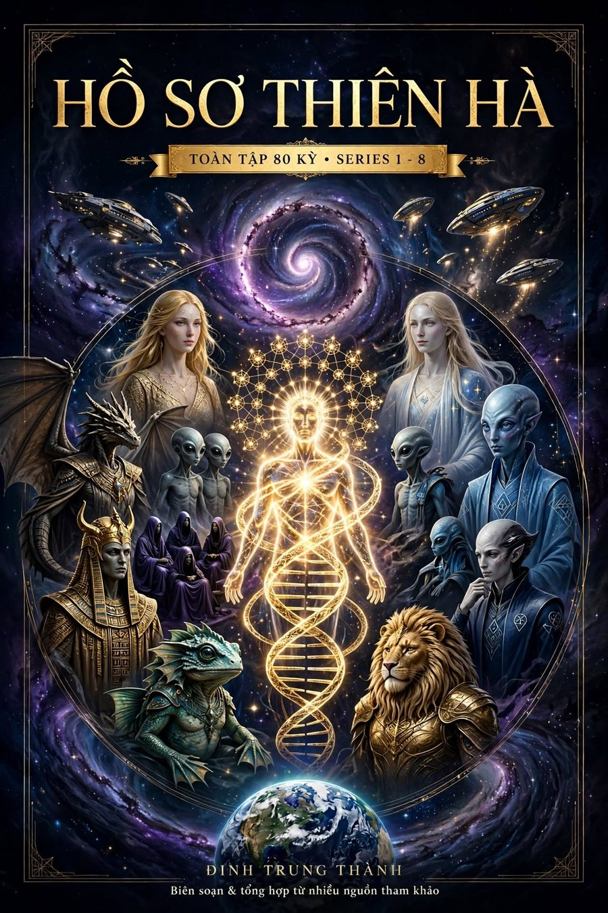
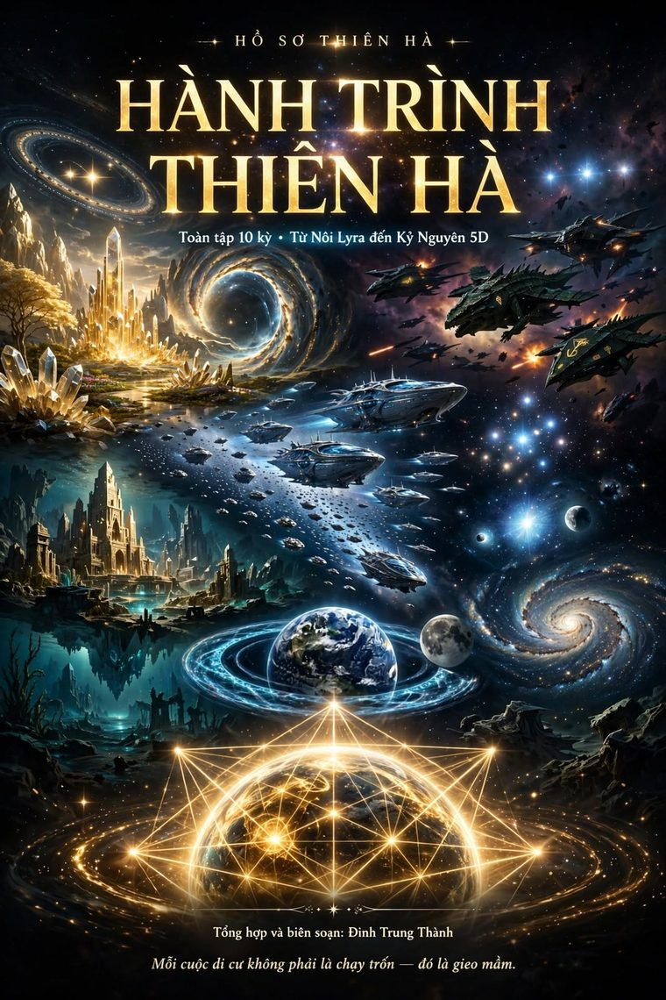

Thư viện chuyên đề miễn phí
Hồ Sơ Thiên Hà
Từ Lăng Kính Lyra và các Đấng Sáng Lập, tới dòng máu Anunnaki, những nền văn minh lòng đất, chương trình không gian bí mật, hòm không gian cổ đại, hồ sơ các chủng tộc — và cuối cùng là cẩm nang tâm thức vũ trụ. 9 chuyên đề, 90 kỳ, đọc theo đúng mạch.

9 chuyên đề
Mỗi chuyên đề là một tuyến truyện liền mạch. Đọc từ kỳ đầu tới kỳ cuối, hoặc nhảy vào bất kỳ chủ đề nào bạn quan tâm.

Tiền Sử Thiên Hà
Khởi nguyên Vũ trụ, Lăng Kính Lyra, các Đấng Sáng Lập và cuộc Đại Di Cư vĩ đại.
10 kỳ →
Hành Trình Thiên Hà
Các nền văn minh thiên hà, Orion, Atlantis — Lemuria và cuộc chiến di truyền.
10 kỳ →
Dòng Máu Anunnaki
Nibiru, Enki — Enlil, di sản 12 chuỗi DNA và ma trận tần số 3D.
10 kỳ →
Văn Minh Lòng Đất
Trái Đất rỗng, Agartha, Telos, Shambhala và mạng lưới căn cứ ngầm.
10 kỳ →
Chương Trình Không Gian Bí Mật
SSP, Solar Warden, ICC, Looking Glass và cuộc giải phóng Hệ Mặt Trời.
10 kỳ →
Hòm Không Gian Cổ Đại
Space Arks dưới đáy đại dương, Nam Cực, Mặt Trăng và Sao Hỏa.
10 kỳ →
Hồ Sơ Các Chủng Tộc
Lyra, Pleiades, Arcturus, Sirius, Draco, Greys và Hoàng gia Anunnaki.
10 kỳ →
Khoa Học & Công Nghệ
Stargates, động cơ warp, med-beds, zero-point energy, vũ khí tần số.
10 kỳ →
Cẩm Nang Tâm Thức Vũ Trụ
Tuyến tùng, luân xa, sóng não, DNA 12 sợi, thể vía và tần số 5D.
10 kỳ →Kỳ mới cập nhật
Ấn phẩm mới nhất trong thư viện — kéo xuống để đọc, không cần đăng ký.
TẦN SỐ 5D, KỶ NGUYÊN HOÀN LƯƠNG & TƯƠNG LAI TÂM THỨC NHÂN LOẠI
1. Bản Chất Thật Sự Của Sự Thăng Lên 5D: Chuyển Dịch Dải Tần Nhận Thức Trong các tài liệu truyền thông 3D và các trường phái siêu hình học sai lệch, tiến trình "Thăng Lên 5D" (Ascension) thường bị giật gân hóa thành một thảm họa tận thế, sự hủy diệt vật lý…
Đọc → Kỳ 89DU HÀNH PHÓNG CHIẾU THỂ VÍA (ASTRAL PROJECTION) & PHI THUYỀN ÁNH SÁNG MERKABA
1. Khoa Học Phóng Chiếu Thể VÍA (Astral Projection) & Sợi Dây Bạc (Silver Cord) Trong các bộ môn khoa học lượng tử và tri thức siêu hình thiên hà, Phóng chiếu Thể vía (Astral Projection / Out-of-Body Experience - OBE) không phải là hiện tượng dị đoan hay ảo…
Đọc → Kỳ 88TÁI KÍCH HOẠT BỘ GEN 12 SỢI DNA & DI SẢN 22 CHỦNG TỘC THIÊN HÀ
1. Di Sản Di Truyền 22 Chủng Tộc Thiên Hà Trong Bộ Gen Adamu Trong lịch sử sinh học lượng tử của vũ trụ, loài người Trái Đất (Adamu) không phải là sản phẩm ngẫu nhiên của tiến trình tiến hóa động vật thô 3D, cũng không phải là sinh mệnh thuộc về một hành tinh…
Đọc → Kỳ 87BẢO VỆ TÂM THỨC: CHỐNG THAO TÚNG SÓNG NÃO & THỰC THỂ TIÊU CỰC
1. Nhận Diện Các Hình Thức Tấn Công Năng Lượng & Thao Túng Tâm Trí Trong tiến trình thăng hoa nhận thức của con người Trái Đất, việc thấu hiểu và nhận diện các hình thức tấn công năng lượng cũng như công nghệ thao túng tâm trí là yêu cầu bắt buộc để bảo vệ sự…
Đọc → Kỳ 86PHƯƠNG PHÁP NÂNG CAO TẦN SỐ RUNG ĐỘNG (VIBRATION & FREQUENCY)
1. Bản Chất Vũ Trụ Là Tần Số: Luật Hấp Dẫn Tần Số Lượng Tử Trong nền vật lý học tiên tiến của các văn minh thiên hà, toàn bộ Đa vũ trụ không phải là một tập hợp các vật thể tĩnh lặng, mà là một đại dương năng lượng đang liên tục dao động. Mọi suy nghĩ, cảm…
Đọc → Kỳ 85DÒNG NĂNG LƯỢNG KUNDALINI VÀ BẢN ĐỒ THỨC TỈNH 7 LUÂN XA
1. Bản Chất Năng Lượng Nguyên Thủy Kundalini: Ngọn Lửa Sinh Học Lượng Tử Trong toàn bộ cấu trúc sinh học lượng tử và hệ thống thể năng lượng dĩ thái (Etheric Body) của con người, Kundalini được công nhận là nguồn Năng Lượng Sống Nguyên Thủy (Primal Life Force…
Đọc → Kỳ 84BẢN ĐỒ CÁC DẢI SÓNG NÃO (ALPHA, BETA, THETA, DELTA, GAMMA) VÀ TRẠNG THÁI NGOẠI CẢM
1. Tần Số Sinh Học Thần Kinh: Bộ Ăng-Ten Giải Mã Thực Tại Của Bộ Não Trong cấu trúc sinh học của cơ thể con người, bộ não không phải là nơi tự sinh ra suy nghĩ hay lưu trữ tri thức một cách độc lập tuyệt đối. Dưới góc nhìn của vật lý lượng tử và tri thức các…
Đọc → Kỳ 83CƠ CHẾ GIAO TIẾP THẦN GIAO CÁCH CẢM (TELEPATHY) VÀ BÍ MẬT LUÂN XA TIM
1. Bản Chất Lượng Tử Của Thần Giao Cách Cảm: Vượt Qua Rào Cản Ngôn Ngữ 3D Trong nhận thức của thế giới 3D cổ điển, ngôn ngữ nói và chữ viết phát âm qua thanh quản được xem là phương tiện giao tiếp duy nhất và tiến hóa nhất của con người. Tuy nhiên, dưới góc…
Đọc → Kỳ 82KHAI MỞ TUYẾN TÙNG (PINEAL GLAND) VÀ CON MẮT THỨ BA (AJNA CHAKRA)
1. Bản Chất Giải Phẫu Lượng Tử: Bộ Giải Mã Sinh Học Giữa Thể Xác Và Linh Hồn Trong cấu trúc sinh học của con người cũng như các sinh mệnh dạng người (Humanoid) trong Đa vũ trụ, Tuyến Tùng (Pineal Gland) là một cơ quan nội tiết nhỏ mang hình dáng quả thông…
Đọc →